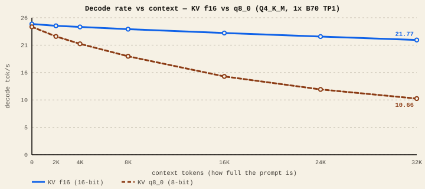
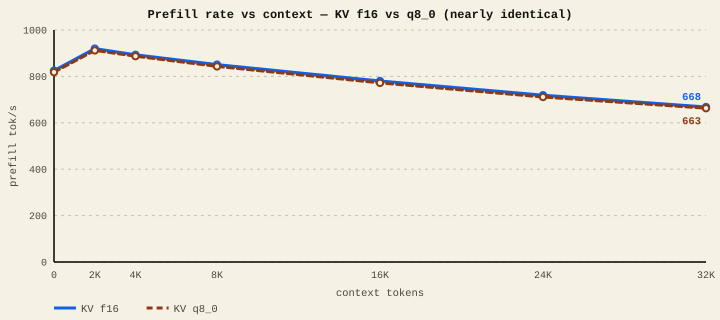

The short version
- KV16 (f16) is the speed choice. Decode barely drops as context grows.
- KV8 (q8_0) roughly halves KV memory, but its decode penalty grows with context: ~2% slower at an empty prompt, ~51% slower at 32K on our Q4_K_M B70 lane.
- Prefill (reading your prompt) barely cares about KV precision either way.
- Use KV8 only when you need the memory to fit a long context on the card — not as a default speed setting.
What the KV cache actually is
When a model reads your prompt, every token produces two vectors per attention layer — a key and a value. The model keeps them so that when it writes the next word it can "look back" at everything so far without recomputing it. That stored pile of keys and values is the KV cache, and it grows by one slot per token, forever, until the request ends.
Two things follow. First, the cache gets big — it is usually the main thing eating your spare VRAM at long context. Second, on every single decoded token the GPU has to read the entire cache back out of memory. That second fact is the whole story of this guide.
The knob: how each KV slot is stored
- KV16 / f16 — 16 bits per number. The default. Biggest, but stored exactly as the model produced it.
- KV8 / q8_0 — 8-bit quantized. Roughly half the size. Each slot must be de-quantized back to a real number every time it's read.
- FP8 — an 8-bit floating format used by vLLM's XPU path (a different runtime; see Runtimes). Same memory idea, different backend and dequant path, so its speed tradeoff can differ from llama.cpp's q8_0.
What we measured
Single Arc Pro B70, Qwen3.8-27B Q4_K_M, one card (TP1), context filled from empty to 32K, everything identical except the KV format. Lab-measured
Decode: the penalty grows with context

| Context | Decode KV f16 | Decode KV q8_0 | q8 vs f16 |
|---|---|---|---|
| 0 | 24.81 | 24.27 | −2.2% |
| 4K | 24.25 | 21.05 | −13.2% |
| 8K | 23.83 | 18.68 | −21.6% |
| 16K | 23.10 | 14.86 | −35.7% |
| 32K | 21.77 | 10.66 | −51.0% |
Every decoded token reads the whole KV cache. With q8_0, every one of those reads also has to un-pack an 8-bit number back into a real one. At an empty prompt there's almost nothing to unpack, so the two are tied. By 32K the GPU is de-quantizing a huge cache on every token, and that work — not the memory saving — dominates. The cost scales with how full your context is.
Prefill doesn't care
Reading the prompt (prefill) is limited by raw math, not by re-reading the cache, so KV precision barely touches it — the two lines sit on top of each other.
Prefill: KV format is almost irrelevant

So why would anyone use KV8?
Memory. The KV cache is often what stops a long context from fitting. For Qwen3.8-27B a full 256K-token context needs about 16 GiB of KV cache at f16 — half your 32 GiB card, on top of the weights. Switching to q8_0 drops that to roughly 8.5 GiB, which can be the difference between "fits" and "out of memory."
That's the real trade: KV8 buys headroom for longer context, and you pay for it in decode speed that gets worse the longer the context runs.
What to pick
On the llama.cpp SYCL B70 lane, keep KV at f16 for everyday use — it's faster and, at 32K, nearly twice as fast. Reach for q8_0 only when a long context won't otherwise fit in VRAM, and expect the decode hit to deepen as the conversation grows. If you're on vLLM's XPU path, its FP8 KV is a separate mechanism — measure it yourself rather than assuming it behaves like q8_0 here.
The exact percentages are specific to our Q4_K-tuned build and this model's attention shape; a different model or backend will have a different curve. But the direction is robust and worth internalizing: any quantized KV cache pays a per-token dequant tax that compounds with context length. Short chats: barely matters. Long documents and agents: it matters a lot. Community reports on the newer vLLM XPU stack run FP8 KV by default and still hit good rates, which is a reminder that the backend's dequant path matters as much as the format.